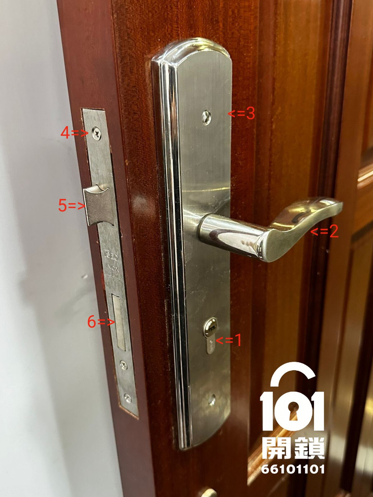
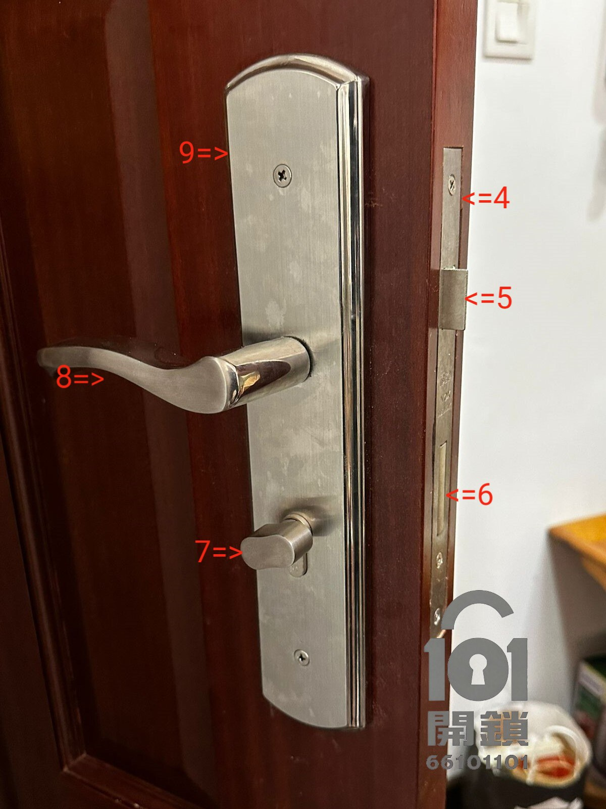
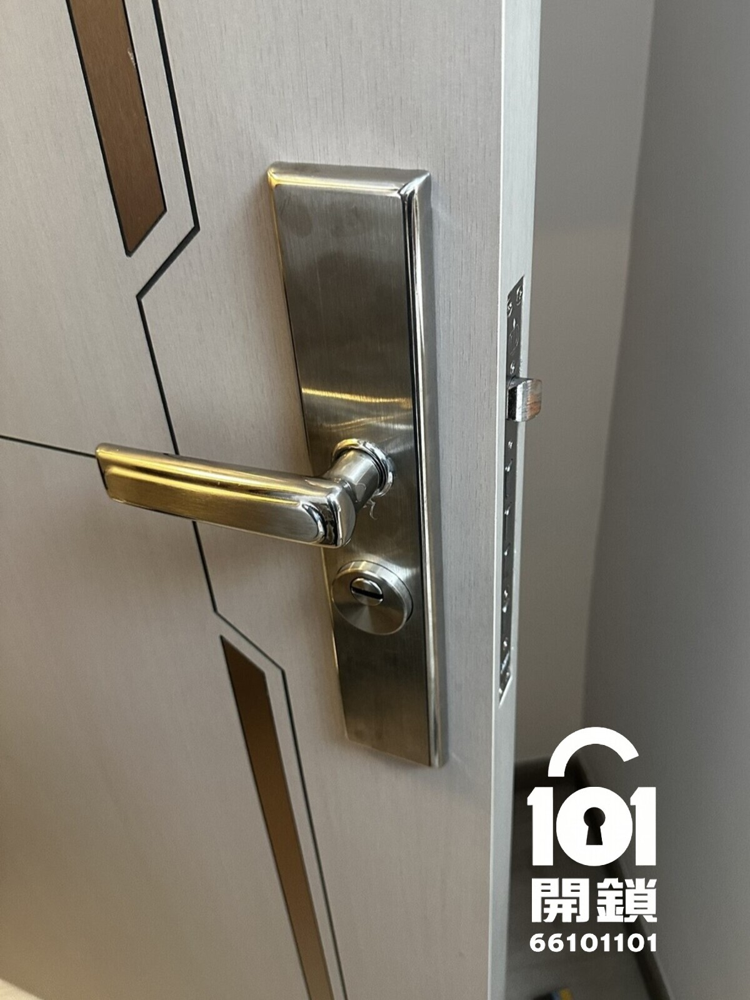

先判斷：甚麼情況不要再自己處理？
先保護門鎖和鎖匙，比強行處理更重要。以下只屬安全提醒，不能代替現場檢查。
先卸去門的壓力
如鎖匙或扭手感覺受力，只可在不強扭下輕推或輕拉門再試一次；沒有改善便停止。
不要隨意拆面板
未確認結構便拆件，可能令固定件鬆脫、零件遺失，甚至令門不能安全關上。
記錄症狀再查詢
拍攝前後不要展示鎖匙齒位或住址資料；清楚相片可協助初步分辨鎖膽、把手或鎖體問題。
歐式鎖／葫蘆膽常見 12 種故障
以下按可觀察到的症狀逐項整理；實際原因可能不止一個，建議先採取安全行動，避免二次損壞。
1. 鎖芯位置正常，但鎖匙插唔入
可能與匙孔異物、鎖膽磨損或鎖匙狀態有關。不要把物件伸入匙孔或強行推入鎖匙。
可傳相初判：鎖膽正面及鎖匙狀態2. 鎖芯位置未回正，鎖匙插唔入
鎖芯未回到可插匙的位置時，強行插入或拔出鎖匙可能令問題加劇。
可安全檢查：不要加力扭動或拔插3. 師父匙／紅綠燈鎖匙插到但扭唔到
師父匙／綠黃匙失效，可能是因為主人匙／紅匙已生效。請勿再嘗試以鎖匙強行扭動，避免扭斷鎖匙卡死。
必須停止 DIY：避免鎖匙扭斷卡死4. 鎖膽可控制斜舌，但把手控制不到斜舌
把手方軸、把手組件或鎖體都有可能需要檢查。若門已開啟，請勿關門，以免關門後卡死開唔到門。
可傳送相片／影片作初步判斷5. 關門後斜舌無法彈出，門會彈開
鎖口對位、門鉸下墜、斜舌或鎖體彈簧狀態都可能影響；不要反覆大力撞門。
檢查門框鎖口：搵出問題6. 細匙筒被抽出
細匙筒固定位已鬆脫。即使看似可推回，亦不代表能安全地繼續使用。
必須停止 DIY：不要反覆插拔7. 鎖膽可以空轉
鎖膽傳動件可能有問題；空轉不代表一定只需更換鎖膽，亦可能要檢查鎖體。
必須停止 DIY：需檢查鎖膽與鎖體8. 鎖膽空轉，但鎖膽功能完全正常
鎖體內部零件有問題，不能只憑感覺認為可直接換鎖膽就能解決問題。
可傳相初判：鎖膽、把手及門邊鎖體9. 整個鎖膽被拉出或明顯鬆脫
可能性包括固定螺絲安裝問題或零件損壞。不要嘗試硬塞回去或繼續鎖門。
必須停止 DIY：避免鎖膽脫落10. 開門時，斜舌無法正常彈出
在開門狀態下仍然失靈，較可能涉及鎖體或彈簧狀態，需檢查鎖體。
可傳相初判：門邊鎖體及斜舌11. 開門時，方閂無法正常伸出或縮回
方閂運作異常可能涉及鎖體；切勿強扭鎖匙，以免令鎖匙折斷或鎖體完全卡死。
必須停止 DIY：安排檢查鎖體12. 開門時，鎖匙難拔出
鎖匙、鎖膽磨損。鎖匙已卡住或感覺快折斷時，請不要再加力扭動，以免斷匙。
必須停止 DIY：避免斷匙留在鎖膽內歐式鎖／葫蘆膽是甚麼？
「歐式鎖」一般指採用歐式鎖膽（常稱葫蘆膽）的門鎖系統。實際門鎖還包括鎖體、面板、把手，以及部分門鎖的連動結構。


葫蘆鎖膽
以鎖匙或室內扭手帶動方閂及斜舌。
鎖體
內置斜舌、方閂，部分配置有天地勾連桿。
面板與把手
把手通常用於控制斜舌，面板配合固定及遮蓋孔位。
鎖口片
安裝在門框，配合斜舌與方舌咬合。
一套標準歐式鎖主要由 葫蘆鎖芯、鎖體、前后面板／把手 構成。以下係詳細組件說明：
| 編號 | 組件 | 功能／備註 |
|---|---|---|
| 01 | 葫蘆鎖膽（室外插鎖匙） | 控制方閂及斜舌 |
| 02 | 外面板把手 | 通常配置標準把手，可下壓控制斜舌。 |
| 03 | 外面板 | 遮蓋舊孔 |
| 04 | 鎖體 | 內置斜舌、方閂、天地勾連桿（選配）。 |
| 05 | 斜舌 | 門關上並停到正確位置後，斜舌卡住鎖口上鎖。 |
| 06 | 方閂 | 反鎖後，無法以膠片、信片等方式直接撥開門鎖。 |
| 07 | 葫蘆鎖膽（室內扭手） | 控制方閂及斜舌 |
| 08 | 內面板把手 | 通常配置標準把手，可下壓控制斜舌。 |
| 09 | 內面板 | 遮蓋舊孔 |
| 10 | 鎖口片 | 安裝在門框，配合斜舌及方舌咬合，加強防撞。 |
手機可向左／右滑動查看完整組件表。
不確定是鎖膽還是鎖體問題？
WhatsApp 傳門鎖正面、門邊鎖體及室內把手相片，並寫明地區、門目前開啟／關閉及主要症狀。
何時可考慮換鎖膽？何時要檢查鎖體？
歐式鎖的鎖膽通常可獨立更換，但能否直換取決於原有結構與損壞位置，不能只憑外觀或單一尺寸決定。
可能只需考慮換鎖膽
- 目的是令舊匙失效
- 鎖膽損壞，而鎖體與把手運作正常
- 確認新鎖膽尺寸與安裝方式合適
應一併檢查鎖體
- 鎖膽或扭手空轉
- 斜舌、方閂或把手未能正常帶動
- 門鎖設有天地勾或其他連動結構
更換前需要核對
- 鎖膽內外兩側長度及突出位置
- 門厚、面板厚度與固定方式
- 鎖體鎖中、鎖距、方向及門邊結構
查詢前準備三張相，初判會更清楚
相片只用作初步了解門鎖結構。請勿拍到鎖匙齒位、住址或其他個人資料。
1. 門鎖正面
拍清楚室外鎖膽、面板和把手的整體狀態。
2. 門邊鎖體
開門時拍攝門邊鎖體、斜舌與方閂位置。
3. 室內把手／扭手
拍清楚室內扭手、把手與面板；再說明地區和症狀。
香港真實案例：西營盤更換歐式鎖膽
這是網站已公開的服務案例：客人因工人離職，希望舊匙失效；師傅先確認尺寸、門厚及鎖體狀態，再更換合適鎖膽並測試新匙。

中西區・西營盤
更換歐式鎖膽，令舊匙失效
查看實際服務原因、尺寸確認重點，以及完成後室內外照片。
查看西營盤更換鎖膽案例 →DIY 更換歐式鎖芯／鎖體注意事項
葫蘆膽鎖嘅優點係鎖膽可獨立更換，但尺寸揀錯就可能裝唔到。以下係更換前應先核對的重點：
鎖芯長度要精準
葫蘆膽總長度分為兩邊（門外＋門內），常見規格：30＋30＝60mm、35＋35＝70mm、40＋40＝80mm、45＋45＝90mm 等。一定要度清楚門既厚度及兩邊突出尺寸，買錯會凸出太多或凹入。
鎖體「鎖中」尺寸及鎖距
歐式鎖體既鎖中（鎖膽中心到門邊距離）大多為 60mm／70mm，同鎖距（手把到鎖膽距離）大多為 72mm／85mm。購買鎖體時務必確認同舊鎖體一致，否則門窿可能唔對位。
鎖體方向：分左手門／右手門
斜舌斜面向外方向決定鎖體係左手定右手；買錯會導致無法關門，強行安裝可能造成損壞。
常見問題
歐式鎖和葫蘆膽是否同一樣嘢？
日常香港用語中，「歐式鎖」常指採用歐式鎖膽（葫蘆膽）的門鎖系統；實際門鎖還包括鎖體、面板、把手及可能的連動結構。
鎖匙扭唔到，是不是一定要換鎖膽？
不是。門扇受壓、鎖口對位、鎖膽或鎖體都可能造成相似症狀。先避免強扭，再按實際狀態評估。
只換鎖膽可否令舊匙失效？
如新鎖膽正確安裝並以新匙操作，原有鎖膽的舊匙一般不能再開啟新鎖膽；完成後仍應測試確認。